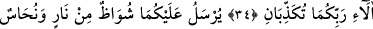
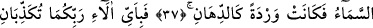
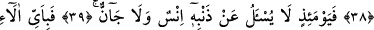
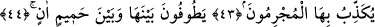

SUÇLULAR,
SÎMÂLARINDAN TANINIR
33. Ey cin ve insan toplulukları! Göklerin ve yerin çerçevesinden çıkıp gitmeye
gücünüz yetiyorsa geçin. Ancak büyük bir güçle çıkıp gidebilirsiniz.
34. Öyleyse Rabbinizin hangi nimetlerini yalanlayabilirsiniz?
35. Üzerinize ateşten alev ve duman gönderilir de birbirinizi kurtaramaz ve
yardımlaşamazsınız.
36. Öyleyken Rabbinizin hangi nimetlerini yalanlayabilirsiniz?
37. Gök yarılıp da kızarmış yağ renginde gül gibi olduğu zaman,
38. Rabbinizin hangi nimetlerini yalanlayabilirsiniz?
39. İşte o gün insana da cine de günahı sorulmaz.
40. O halde Rabbinizin nimetlerinden hangisini yalanlayabilirsiniz?
41. Suçlular, simalarından tanınır, perçemlerinden ve ayaklarından yakalanırlar.
42. Öyleyken Rabbinizin hangi nimetlerini yalanlayabilirsiniz?
43. İşte bu, suçluların yalanladıkları cehennemdir.
44. Onlar, cehennemle kaynar su arasında dolaşır dururlar.
45. Şimdi Rabbinizin nimetlerinden hangisini yalanlayabilirsiniz?
“Ey cin ve insan toplulukları!” Önceki âyette iki topluluk anlamındaki “sekalân”
kelimesiyle ifâde edilen “cin ve insan toplulukları”na burada daha iyi anlaşılsın diye
kendi cins isimleriyle hitab edilmiştir. Cinler zor işlerin üstesinden gelmekte mâhir ve